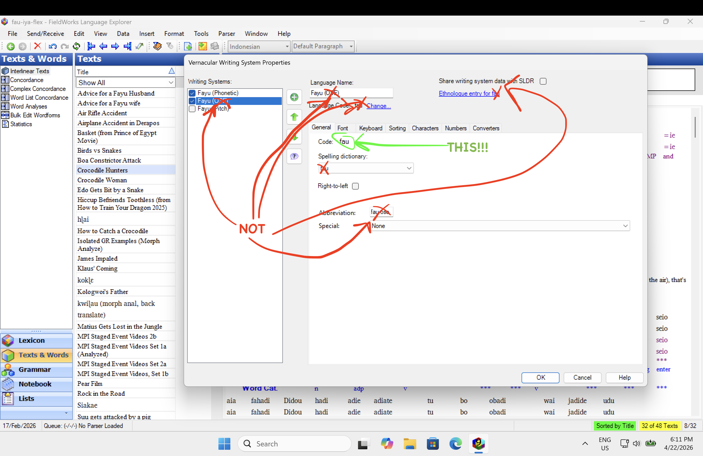

Codes are CASE-SENSITIVE. fau, Fau and FAU are three different codes to FLEx — copy the Code exactly, letter for letter. A wrong-case code makes FLEx silently create a duplicate writing system on import, leaving a mess to clean up.
Use the value labelled Code on the General tab of the Writing System properties — not the Abbreviation, the Language Name, the Language Code, or the Ethnologue code.
grc, iau-Latn-x-tmu).
Codes are BCP-47 tags (en, grc, es-419, or custom). Enter them exactly as FLEx shows them, including upper/lower case and any hyphens.
Texts created in the FlexText apps take these codes at export time — correcting a code here fixes every text you export afterwards. Imported FLEx texts keep their own codes.
Kode PEKA HURUF BESAR/KECIL. fau, Fau, dan FAU adalah tiga kode yang berbeda bagi FLEx — salin Code persis huruf demi huruf. Kode dengan huruf besar/kecil yang salah membuat FLEx diam-diam membuat sistem penulisan duplikat saat impor.
Gunakan nilai berlabel Code pada tab General di properti Writing System — bukan Abbreviation, nama bahasa, Language Code, atau kode Ethnologue.
grc, iau-Latn-x-tmu).Kode berupa tag BCP-47. Masukkan persis seperti yang ditampilkan FLEx, termasuk huruf besar/kecil dan tanda hubungnya.
Teks yang dibuat di aplikasi FlexText memakai kode ini saat ekspor — memperbaiki kode di sini memperbaiki semua teks yang diekspor setelahnya. Teks FLEx yang diimpor mempertahankan kodenya sendiri.